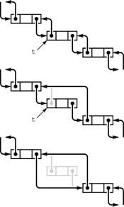

C++ Programming Robert Sedgewick - Princeton University Addison Wesley Professional Algorithms in C++, Parts 1–4: Fundamentals, Data Structure, Sorting, Searching, Third Edition C++ Programming Robert Sedgewick - Princeton University Addison Wesley Professional Algorithms in C++, Parts 1–4: Fundamentals, Data Structure, Sorting, Searching, Third Edition
3.4. Elementary List Processing
Linked lists bring us into a world of computing that is markedly different from that of arrays and structures. With arrays and structures, we save an item in memory and later refer to it by name (or by index) in much the same manner as we might put a piece of information in a file drawer or an address book; with linked lists, the manner in which we save information makes it more difficult to access but easier to rearrange. Working with data that are organized in linked lists is called list processing.
When we use arrays, we are susceptible to program bugs involving out-of-bounds array accesses. The most common bug that we encounter when using linked lists is a similar bug where we reference an undefined pointer. Another common mistake is to use a pointer that we have changed unknowingly. One reason that this problem arises is that we may have multiple pointers to the same node without necessarily realizing that that is the case. Program 3.9 avoids several such problems by using a circular list that is never empty, so that each link always refers to a well-defined node, and each link can also be interpreted as referring to the list.
Developing correct and efficient code for list-processing applications is an acquired programming skill that requires practice and patience to develop. In this section, we consider examples and exercises that will increase our comfort with working with list-processing code. We shall see numerous other examples throughout the book, because linked structures are at the heart of some of our most successful algorithms.
As mentioned in Section 3.3, we use a number of different conventions for the first and final pointers in a list. We consider some of them in this section, even though we adopt the policy of reserving the term linked list to describe the simplest situation.
Definition 3.3. A linked list is either a null link or a link to a node that contains an item and a link to a linked list|
This definition is more restrictive than Definition 3.2, but it corresponds more closely to the mental model that we have when we write list-processing code. Rather than exclude all the other various conventions by using only this definition, and rather than provide specific definitions corresponding to each convention, we let both stand, with the understanding that it will be clear from the context which type of linked list we are using.
One of the most common operations that we perform on lists is to traverse them: We scan through the items on the list sequentially, performing some operation on each. For example, if x is a pointer to the first node of a list, the final node has a null pointer, and visit is a procedure that takes an item as an argument, then we might write
for (link t = x; t != 0; t = t->next) visit(t->item);
to traverse the list. This loop (or its equivalent while form) is as ubiquitous in list-processing programs as is the corresponding loop of the form for (int i = 0; i < N; i++) in array-processing programs.
Program 3.10 is an implementation of a simple list-processing task, reversing the order of the nodes on a list. It takes a linked list as an argument, and returns a linked list comprising the same nodes, but with the order reversed. Figure 3.7 shows the change that the function makes for each node in its main loop. Such a diagram makes it easier for us to check each statement of the program to be sure that the code changes the links as intended, and programmers typically use these diagrams to understand the operation of list-processing implementations.
To reverse the order of a list, we maintain a pointer r to the portion of the list already processed, and a pointer y to the portion of the list not yet seen. This diagram shows how the pointers change for each node in the list. We save a pointer to the node following y in t, change y's link to point to r, and then move r to y and y to t.

|
Program 3.10. List reversal|
This function reverses the links in a list, returning a pointer to the final node, which then points to the next-to-final node, and so forth, with the link in the first node of the original list set to 0, the null pointer. To accomplish this task, we need to maintain links to three consecutive nodes in the list.
link reverse(link x)
{ link t, y = x, r = 0;
while (y != 0)
{ t = y->next; y->next = r; r = y; y = t; }
return r;
}
|
Program 3.11 is an implementation of another list-processing task: rearranging the nodes of a list to put their items in sorted order. It generates N random integers, puts them into a list in the order that they were generated, rearranges the nodes to put their items in sorted order, and prints out the sorted sequence. As we discuss in Chapter 6, the expected running time of this program is proportional to N2, so the program is not useful for large N. Beyond this observation, we defer discussing the sort aspect of this program to Chapter 6, because we shall see a great many methods for sorting in Chapters 6 through 10. Our purpose now is to present the implementation as an example of a list-processing application.
The lists in Program 3.11 illustrate another commonly used convention: We maintain a dummy node called a head node at the beginning of each list. We ignore the item field in a list's head node, but maintain its link as the pointer to the node containing the first item in the list. The program uses two lists: one to collect the random input in the first loop, and the other to collect the sorted output in the second loop. Figure 3.8 diagrams the changes that Program 3.11 makes during one iteration of its main loop. We take the next node off the input list, find where it belongs in the output list, and link it into position.
This diagram depicts one step in transforming an unordered linked list (pointed to by a) into an ordered one (pointed to by b), using insertion sort. We take the first node of the unordered list, keeping a pointer to it in t (top). Then, we search through b to find the first node x with x->next->item > t->item (or x->next = NULL), and insert t into the list following x (center). These operations reduce the length of a by one node, and increase the length of b by one node, keeping b in order (bottom). Iterating, we eventually exhaust a and have the nodes in order in b.
Program 3.11. List insertion sort|
This code generates N random integers between 0 and 999, builds a linked list with one number per node (first for loop), and then rearranges the nodes so that the numbers appear in order when we traverse the list (second for loop). To accomplish the sort, we maintain two lists, an input (unsorted) list and an output (sorted) list. On each iteration of the loop, we remove a node from the input and insert it into position in the output. The code is simplified by the use of head nodes for each list, that contain the links to the first nodes on the lists. The declarations of the head nodes use the constructor, so that their data members are initialized when they are created.
node heada(0, 0); link a = &heada, t = a;
for (int i = 0; i < N; i++)
t = (t->next = new node(rand() % 1000, 0));
node headb(0, 0); link u, x, b = &headb;
for (t = a->next; t != 0; t = u)
{
u = t->next;
for (x = b; x->next != 0; x = x->next)
if (x->next->item > t->item) break;
t->next = x->next; x->next = t;
}
|
The primary reason to use the head node at the beginning becomes clear when we consider the process of adding the first node to the sorted list. This node is the one in the input list with the smallest item, and it could be anywhere on the list. We have three options:
Duplicate the for loop that finds the smallest item and set up a one-node list in the same manner as in Program 3.9. Test whether the output list is empty every time that we wish to insert a node. Use a dummy head node whose link points to the first node on the list, as in the given implementation.
The first option is inelegant and requires extra code; the second is also inelegant and requires extra time.
The use of a head node does incur some cost (the extra node), and we can avoid the head node in many common applications. For example, we can also view Program 3.10 as having an input list (the original list) and an output list (the reversed list), but we do not need to use a head node in that program because all insertions into the output list are at the beginning. We shall see still other applications that are more simply coded when we use a dummy node, rather than a null link, at the tail of the list. There are no hard-and-fast rules about whether or not to use dummy nodes—the choice is a matter of style combined with an understanding of effects on performance. Good programmers enjoy the challenge of picking the convention that most simplifies the task at hand. We shall see several such tradeoffs throughout this book.
For reference, a number of options for linked-list conventions are laid out in Table 3.1; others are discussed in the exercises. In all the cases in Table 3.1, we use a pointer head to refer to the list, and we maintain a consistent stance that our program manages links to nodes, using the given code for various operations. Allocating and freeing memory for nodes and filling them with information is the same for all the conventions. Robust functions implementing the same operations would have extra code to check for error conditions. The purpose of the table is to expose similarities and differences among the various options.
Table 3.1. Head and tail conventions in linked listsThis table gives implementations of basic list-processing operations with five commonly used conventions. This type of code is used in simple applications where the list-processing code is inline. | Circular, never empty | first insert: | head->next = head; | insert t after x: | t->next = x->next; x->next = t; | remove after x: | x->next = x->next->next; | traversal loop: | t = head; | | | do { ... t = t->next; } while (t != head); | test if one item: | if (head->next == head) | Head pointer, null tail | initialize: | head = 0; | insert t after x: | if (x == 0) { head = t; head->next = 0; } | | | else { t->next = x->next; x->next = t; } | remove after x: | t = x->next; x->next = t->next; | traversal loop: | for (t = head; t != 0; t = t->next) | test if empty: | if (head == 0) | Dummy head node, null tail | initialize: | head = new node; | | | head->next = 0; | insert t after x: | t->next = x->next; x->next = t; | remove after x: | t = x->next; x->next = t->next; | traversal loop: | for (t = head->next; t != 0; t = t->next) | test if empty: | if (head->next == 0) | Dummy head and tail nodes | initialize: | head = new node; | | | z = new node; | | | head->next = z; z->next = z; | insert t after x: | t->next = x->next; x->next = t; | remove after x: | x->next = x->next->next; | traversal loop: | for (t = head->next; t != z; t = t->next) | test if empty: | if (head->next == z) |
Program 3.12. List-processing interface|
In this code, which we might keep in an interface file list.h, we define the types of nodes and links, including the operations we want to perform on them. We declare our own functions for allocating and freeing memory for list nodes. The function construct is for the convenience of the implementation. These definitions allow clients to use Nodes and associated operations without dependence upon implementation details. As we shall see in Chapter 4, a slightly different interface based on C++ classes can ensure that client programs do not depend on implementation details.
typedef int Item;
struct node { Item item; node *next; };
typedef node *link;
typedef link Node;
void construct(int);
Node newNode(int);
void deleteNode(Node);
void insert(Node, Node);
Node remove(Node);
Node next(Node);
Item item(Node);
|
Another important situation in which it is sometimes convenient to use head nodes occurs when we want to pass pointers to lists as arguments to functions that may modify the list, in the same way that we do for arrays. Using a head node allows the function to accept or return an empty list. If we do not have a head node, we need a mechanism for the function to inform the calling function when it leaves an empty list. One solution in C++ is to pass the list pointer as a reference parameter. Another mechanism—the one used for the function in Program 3.10—is to have list-processing functions take pointers to input lists as arguments and return pointers to output lists. With this convention, we do not need to use head nodes. Furthermore, it is well suited to recursive list processing, which we use extensively throughout the book (see Section 5.1).
Program 3.13. List allocation for the Josephus problem|
This program for the Josephus problem is an example of a client program utilizing the list-processing primitives declared in Program 3.12 and implemented in Program 3.14.
#include <iostream.h>
#include <stdlib.h>
#include "list.h"
int main(int argc, char *argv[])
{ int i, N = atoi(argv[1]), M = atoi(argv[2]);
Node t, x;
construct(N);
for (i = 2, x = newNode(1); i <= N; i++)
{ t = newNode(i); insert(x, t); x = t; }
while (x != next(x))
{
for (i = 1; i < M; i++) x = next(x);
deleteNode(remove(x));
}
cout << item(x) << endl;
return 0;
}
|
Program 3.12 declares a set of black-box functions that implement basic list operations, so we can avoid repeating code inline and depending upon implementation details. Program 3.13 is our Josephus-election program (Program 3.9) recast as a client program that uses this interface. Identifying the important operations that we use in a computation and defining them in an interface gives us the flexibility to consider different concrete implementations of critical operations and to test their effectiveness. We consider one implementation for the operations defined in Program 3.12 in Section 3.5 (see Program 3.14), but we could also try other alternatives without changing Program 3.13 at all (see Exercise 3.51). This theme will recur throughout the book. C++ includes several mechanisms designed specifically to make it easier to develop encapsulated implementations, as discussed in Chapter 4.
Some programmers prefer to encapsulate all operations on low-level data structures such as linked lists by defining functions for every low-level operation in interfaces like Program 3.12. Indeed, as we shall see in Chapter 4, the C++ class mechanism makes it easy to do so. However, that extra layer of abstraction sometimes masks the fact that just a few low-level operations are involved. In this book, when we are implementing higher-level interfaces, we usually write low-level operations on linked structures directly, to clearly expose the essential details of our algorithms and data structures. We shall see many examples in Chapter 4.
By adding more links, we can add the capability to move backward through a linked list. For example, we can support the operation "find the item before a given item" by using a doubly linked list in which we maintain two links for each node: one (prev) to the item before, and another (next) to the item after. With dummy nodes or a circular list, we can ensure that x, x->next->prev, and x->prev->next are the same for every node in a doubly linked list. Figures 3.9 and 3.10 show the basic link manipulations required to implement remove, insert after, and insert before, in a doubly linked list. Note that, for remove, we do not need extra information about the node before it (or the node after it) in the list, as we did for singly linked lists—that information is contained in the node itself.
In a doubly-linked list, a pointer to a node is sufficient information for us to be able to remove it, as diagrammed here. Given t, we set t->next->prev to t->prev (center) and t->prev->next to t->next (bottom).

To insert a node into a doubly-linked list, we need to set four pointers. We can insert a new node after a given node (diagrammed here) or before a given node. We insert a given node t after another given node x by setting t->next to x->next and x->next->prev to t(center), and then setting x->next to t and t->prev to x (bottom).
Indeed, the primary significance of doubly linked lists is that they allow us to remove a node when the only information that we have about that node is a link to it. Typical situations are when the link is passed as an argument in a function call, and when the node has other links and is also part of some other data structure. Providing this extra capability doubles the space needed for links in each node and doubles the number of link manipulations per basic operation, so doubly linked lists are not normally used unless specifically called for. We defer considering detailed implementations to a few specific situations where we have such a need—for example in Section 9.5.
We use linked lists throughout this book, first for basic ADT implementations (see Chapter 4), then as components in more complex data structures. Linked lists are many programmers' first exposure to an abstract data structure that is under the programmers' direct control. They represent an essential tool for our use in developing the high-level abstract data structures that we need for a host of important problems, as we shall see.
|